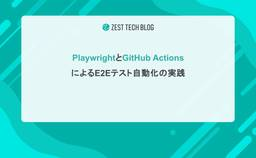
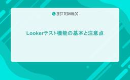
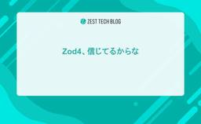
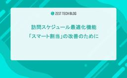
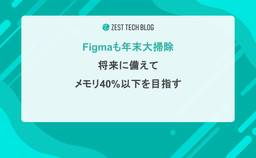
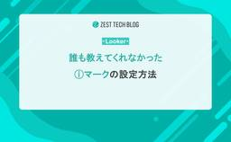
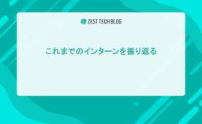
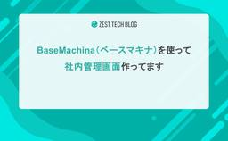

ゼスト Tech Blog
https://techblog.zest.jp/
ゼストは「護りたい。その想いを護る。」をミッションに、在宅医療・介護業界向けのSaaSを開発しています。
フィード

PlaywrightとGitHub ActionsによるE2Eテスト自動化の実践
ゼスト Tech Blog
1. はじめに 現状の課題 これまで、回帰テストはすべて手作業で実施していました。 1回の作業時間は短いものの、継続的な運用において以下のリスクが顕在化していました。 非稼働日の監視空白 休日や体調不良など、PCに触れない期間はテストができません。その間に障害や仕様変更が発生しても気づくことができず、対応が遅れるリスクがありました。 実施漏れのリスク 多忙な業務の合間ではチェックを飛ばしてしまう恐れがありました。 目指すゴール 正常稼働時は監視を意識することなく、エラーが発生した際のみ詳細を確認すればよい環境の構築を目指しました。 2. 技術選定と開発手法：AIとの共存 言語/フレームワーク:…
11時間前

Lookerテスト機能の基本と注意点
ゼスト Tech Blog
こんにちは、株式会社ゼストでインターンをしている榎橘（東京大学3年）です。 現在はLookerを使ったZEST BOARDというダッシュボード開発に参加しています。 その中でLookerのテスト機能を使うことがあったのですが、調べてもあまり情報がなく困ったことがあったので、今回は備忘録的な意味も込めてテストの基本的な書き方や注意点などについてまとめようと思います！ 基本的な書き方 まず基本的なテストの書き方について簡単にまとめます。 test: historic_revenue_is_accurate { explore_source: orders { column: total_reven…
2日前

Zod4、信じてるからな
ゼスト Tech Blog
はじめに こんにちは！株式会社ゼストでエンジニアをしている正原です。 最近より寒くなって鍋が美味しい季節になりましたが、 日本の四季は夏と冬しかないのかな？とよく思うことがあります。 今回は弊社プロダクトを支えていると言っても過言ではない、Zodについての検証です。 Zod v4のプレビュー版が公開されてから約半年ほど経過しました。調べた限り Zod v3 のサポート終了時期に関する情報はないですが、 公式によるとパフォーマンスが大幅に向上したとのことですし、使ってみたい機能もいくつかあるため、 これを機に今後ZESTで使いたい機能と性能に絞って Zod v4 と Zod v3 を比較検証した…
2日前

訪問スケジュール最適化機能「スマート割当」の改善のために
ゼスト Tech Blog
はじめに みなさん、こんにちは。 株式会社ゼストでバックエンドエンジニアとしてインターン中の浦野です。現在、東京大学の 4 年生です。 私は現在、訪問スケジュールを自動で最適化する機能「スマート割当」の開発・改善チームに参画しています。 本投稿では、「スマート割当」をより良いものにしていくために私が担当している内部ツールの取り組みについて簡単にまとめてみたいと思います。 スマート割当とは ZESTシステムが対象としている在宅医療・介護領域においては、患者様/利用者様宅へ医療関係者が訪問するという特徴があり、誰がいつどこへ訪問するかというスケジュールを組む必要があります。 ただ、その際に考慮する…
4日前

Figmaも年末大掃除！将来に備えてメモリ40%以下を目指す！
ゼスト Tech Blog
こんにちは、株式会社ゼストでプロダクトデザインをしている池田です。 12月に入り、今年も残すところあとわずか。年末といえば「大掃除」ですね。 家の掃除ももちろん大切ですが、私たちが毎日向き合っているデザインツール「Figma」のファイルも、気づかないうちにホコリ（不要なデータ）が溜まっていませんか？ 今回は、年末の大掃除に絡めて、私が普段から意識している「Figmaファイルのパフォーマンス維持」と、それを効率よく実現するためのメンテナンス術について紹介します。 なぜFigmaの「大掃除」が必要なのか？ Figmaはブラウザベースで動く非常に優秀なツールですが、無尽蔵にデータを詰め込めるわけでは…
5日前

【Looker】誰も教えてくれなかった「ⓘマーク」の設定方法
ゼスト Tech Blog
Lookerのダッシュボードで、グラフや数値の補足説明を行う「ⓘマーク」の設定方法について紹介したいと思います（なかなか見つけられずでしたがようやく発見...!）。 ↓ こういうやつです。 設定方法 ダッシュボードを編集モードにして、タイル右上の3点リーダーを開き「メモを編集」を選択します。 「メモを編集」画面が開くので、「ⓘマーク」に載せたい情報を書いて、「ロケーションを表示」に「アイコンにカーソルを合わせたとき」を選択し、保存します。 「ⓘマーク」にマススオーバーするとメモの内容が表示されます。 ただ、これだけです！！ タイルの編集画面から設定できると思い込んでおり、3点リーダーの左隣にあ…
6日前

これまでのインターンを振り返る
ゼスト Tech Blog
こんにちは！株式会社ゼストでバックエンドエンジニアインターン中の奥田です。 今回は1年2ヶ月になるインターンで行ってきたことの振り返りと、自分の考えるゼストのインターンの魅力をお伝えできればと思います。 少しでもゼストでのインターンを検討している方の参考になればと思い、今回の記事を書かせていただきます。 背景 自分は現在、東京大学の修士1年生で、学部2年生の際にUTokyo Tech Club (UTTC)という学生団体に入ったことがきっかけで、webアプリケーションの開発を始めました。 www.uttc.dev ここで学んだ後、フロントエンド領域でインターン等を行っていましたが、バックエンド…
7日前

BaseMachina（ベースマキナ）を使って社内管理画面作ってます
ゼスト Tech Blog
弊社は、在宅医療・介護業界向けに訪問スケジュール管理を軸とした、経営を支え、伸ばすサービス群「ZEST」を開発・提供している会社です。 zest.jp 2025年に取り組んだものの1つに、basemachina（ベースマキナ）による社内管理画面構築があります。 本投稿では、その取組みを簡単に紹介したいと思います。 導入に至った背景 2024年にそれまでのシステムを刷新し、フルリニューアルリリースを行いました。 PJは1日でも早くリリースしたかったこともあり、自分たちがオペを頑張ればなんとかなる領域の機能開発については徹底的に削ぎ落とし、ユーザーの皆さまに提供する機能に全振りで開発プロジェクトを…
8日前

Claude・Gemini・Notionを使い倒すPdMが家事を本気でRPG化したら家族が「勇者パーティ」に進化した話
ゼスト Tech Blog
こんにちは。「護りたい。その想いを護る。」株式会社ゼストのプロダクトマネージャーを担当している川添です。ついに我が社もアドベントカレンダー企画ができるようになりました！わーい！というわけで、私も担当させていただこうと思っています。 さて、突然ですが、私は家事が嫌いです。 買っても買っても一瞬でなくなる食品・日用品。片付けても片付けてもすぐに散らかる部屋。洗っても洗っても気がつくと山積みになっている洗濯物。 ただ生きているだけなのに、やることが多すぎやしませんか。 ひとり暮らしの頃は、週末の洗濯や深夜の洗い物はどちらかといえば好きでした。家事リセットして「あーこの家・・・すき・・・」と思いながら…
9日前
レイヤー分けとの合わせ技で考えるコンポーネント実装のディレクトリ構成
ゼスト Tech Blog
こんにちは。株式会社ゼストでWebアプリケーションエンジニアをしている海老原です。 フロントエンド開発が進むにつれて、「このコンポーネントはどこに置くべきか？」「共通化すべきか、それともこの画面専用にすべきか？」と悩む場面は増えていくものです。 今回は、弊社プロダクト "ZEST Schedule" のフロントエンドにおいて、こうした迷いや誤った抽象化を防ぐために設計したディレクトリ構成と、その背後にある考えについてまとめてみました。 前提 ZEST Scheduleのフロントエンドでは Next.js (App Router) を使っています。 予定表画面のスクリーンショット ZESTは在宅…
9日前
CDNだけじゃないCloudflare：Email Workersの使い方と活用例 〜 実践編 〜
ゼスト Tech Blog
前回の記事では、Cloudflare Email Workersの概要について紹介しました。 Email Routingの基本的な設定方法から、Workersと組み合わせることで実現できる柔軟なメール処理について解説しました。 今回は、より実践的なアプリケーションを構築してみたいと思います。 オフィスでよく使われる複合機には、スキャンした文書をメールで送信する機能があります。紙の書類をデジタル化する際に便利な機能ですが、受信したメールから添付ファイルを手動で取り出し、所定のフォルダに保存する作業は意外と手間がかかります。*1 そこで今回は、Cloudflare Email Workersを活用…
11日前
CDNだけじゃないCloudflare：Email Workersの使い方と活用例 〜 概要編 〜
ゼスト Tech Blog
Cloudflareといえば、一般的には高速なCDNサービスを思い浮かべる方が多いかもしれません。しかし、CloudflareはCDNだけではなく、セキュリティを強化するZero Trust、サーバーレスでアプリケーションを実行できるWorkers、データベースサービスのD1、オブジェクトストレージのR2など、様々な開発者にとって、便利なサービスを提供しています。 今回は、その中でも意外と知られていない便利な機能「Cloudflare Email Workers」をご紹介します。Email Workersを使えば、受信したメールをトリガーにしてWorkersの処理を実行できます。メールの転送、…
12日前
ゼスト Tech Advent Calendar 2025 開催！
ゼスト Tech Blog
はじめに みなさん、こんにちは、はじめまして。株式会社ゼストCTOの豊島です。 弊社は、在宅医療・介護業界向けに訪問スケジュール管理を軸とした、経営を支え、伸ばすサービス群を開発・提供している会社です。 zest.jp 2025年も残すところあと僅かとなってきました。 この時期のテック系イベントといえば、そう、アドベントカレンダーですね。 今年は初めて弊社でもアドベントカレンダーを開催することになりました！ エンジニア、デザイナ、PdM、またインターン生などが参加して、技術的なまとめや振り返り記事など幅広いテーマでblog記事を執筆・公開予定です。 主に弊社で採用している技術・ツール類は以下の…
13日前
医療情報技師能力検定試験に合格しました！
ゼスト Tech Blog
2025年度の医療情報技師能力検定試験を受験し、無事合格したので、感想について述べたいと思います。 医療情報技師とは？ 医療情報技師は、一般社団法人日本医療情報学会が認定する専門資格です。病院をはじめとする医療機関において、情報システムの企画・開発から運用・管理まで幅広く携わることができる人材を認定するもので、医療現場のIT化・デジタル化を支える重要な役割を担っています。 この資格は、医療の専門知識とIT技術の両方を兼ね備えた人材を育成することを目的としており、電子カルテの導入支援、医療データの適切な管理、システム間の連携構築など、現代の医療現場に欠かせない業務を専門的に行うことができる能力を…
1ヶ月前
CTO Night & Day 2025 参加してきました
ゼスト Tech Blog
株式会社ゼストCTOの豊島です。 名古屋で開催された本年のCTO Night&Dayは、2022年の長崎、2024年の金沢についで、3回目の参加となりました。 今年からNewsPicksさんが主催、アマゾン・ウェブ・サービスジャパン合同会社さんが協賛という形になったそうです。 np2025.startup-coy.com 3回目ともなると、「お久しぶりです」と声を掛けあえる仲の方が増えてきました。 これまでは自身がどういうことを行っているかという自己紹介が中心でしたが、以前お会いした方と再会し、「この1年間で何が変わったか」という差分についてお話できたことは個人的に新鮮でした。 日々、目の前の…
1ヶ月前
Claude Codeで通知を出す方法3選
ゼスト Tech Blog
こんにちは！株式会社ゼストでエンジニアをしている山下です。 ここ数ヶ月、Claude Codeの話題で盛り上がっていますね。ゼストでもClaude Codeを導入して、日々の業務で活用しています。 しかしClaude Codeを使っていると、 放置していたらツールの使用確認で止まって全然進んでいない時がある 作業が完了していることに気づかず放置してしまっていた というような体験をみなさん一度はしたことがあるのではないでしょうか。 そこで今回は、Claude Codeで通知を出す方法をまとめました。 通知を実現する3つの方法 1. hooksを使う（個人的一番おすすめ） Claude Codeに…
5ヶ月前
Claude Code Action Via Vertex AI 完全ガイド
ゼスト Tech Blog
Claude Code 流行っていますね！ZESTでも絶賛利用しています！ Claude Codeはローカル環境での実行がメインな利用方法になるかと思いますが、開発元のAnthropicからGitHub Actionsで利用できるClaude Code Actionも提供されています。 Claude Code Actionを利用することで GitHub上のIssueを起点にClaude Codeを実行し、PRを作成 作成したPRに対して、Claude Codeからコードレビューを実施 等のGitDevin/GitHub Copilot Code Review等で実行させていたことをClaude…
6ヶ月前
ZEST SCHEDULE フルリニューアルから1年。プロダクトの変遷をまとめました
ゼスト Tech Blog
こんにちは。「護りたい。その想いを護る。」株式会社ゼストのプロダクトマネージャーを担当している川添です。 2024年3月にフルリニューアルをおこなってから1年が経ちました。リニューアル時に重視していた「圧倒的な使いやすさ」を実現しながら新しい価値を提供できるよう奔走する日々で、改めて数えてみると大小合わせて100個ほどの新機能・改善機能をリリースしていました。 この機会に一度、1年間でリリースした主な機能をピックアップしてご紹介したいと思います。 ZEST SCHEDULE フルリニューアル！ 「護りたい。その想いを護る。」をビジョンに掲げ、「使いやすさ」を徹底追求しUI/UXの大幅な刷新をお…
9ヶ月前
ゼストに入社して1年が経ちました
ゼスト Tech Blog
こんにちは。ゼストでエンジニアをしている永井です。 2024年1月に入社し、気がつけば1年以上が経っていました。 今回は、これまでの経歴や転職した背景、この1年で感じたことを書こうと思います。 ゼストにご興味がある方の参考になれば幸いです！ これまでの経歴 ゼストに入社する前は、2社でエンジニアとして働いていました。 新卒でSIerに入社し、AndroidやiOSのモバイルアプリ開発に携わりました。 その後、Web受託会社に転職し、大手スポーツブランドのECサイト開発でフロントエンドを担当しました。新規プロジェクトの立ち上げも経験し、技術選定からリリースまでの一連の工程を任せていただきました。…
9ヶ月前
Findy Team+の「チーム目標設定」で生産性をブーストしてみる
ゼスト Tech Blog
「"生産性"とは大きく出たな。」 そう思った方もいるでしょう。 こんにちは。 株式会社ゼストでPEM（プロダクトエンジニアリングマネージャー）兼エンジニアをしている今井です。 弊社では、昨年末頃からFindy Team+というサービスを導入しています。 この記事では、私の所属するチームがFindy Team+をどのように活用しているか、また、このサービスを導入したことでどんな良いことがあったかを紹介します。 Findy Team+と開発生産性 知らない方のためにざっくり説明すると、 自組織のGitHubから様々なデータを収集、解析して それをグラフで可視化してくれるので 開発組織の傾向を数字で…
9ヶ月前
プロダクトデザイナーのDatadog活用術
ゼスト Tech Blog
「ZEST SCHEDULE」は、2024年3月に大幅リニューアルを行いました。 より使いやすく、より快適にご利用いただくために、日々のアップデートはもちろんのこと、 定期的にユーザーの皆様がどのようにサービスを利用されているのか、使用感や不満点はないかなどを確認しています。 そこで活用しているのが、監視・分析サービスの「Datadog」です。 Datadogはサーバー監視サービスとして有名だと思いますが、ユーザー行動を分析する機能も有しています。 今回は、私が確認しているポイントをご紹介したいと思います。 ユーザーの不満を可視化する「フラストレーションシグナル」 私が「ZEST SCHEDU…
10ヶ月前
Puppeteerに初チャレンジしてうまくいかなかったところのまとめ
ゼスト Tech Blog
こんにちは。株式会社ゼストでエンジニアをしている武藏です。 本記事では、Puppeteerに初チャレンジした私が、「こうすればよかったかも」と思った課題感とその対策を紹介します。 Puppeteerとは Puppeteerは、DevToolsプロトコルまたはWebDriver BiDiを介してChromeやFirefoxを制御するための、高水準APIを提供するJavaScriptライブラリです。 Webページの自動操作、スクリーンショットの取得、PDF生成、フォーム送信、UIテストなど、ブラウザで手動で行うほとんどの操作を自動化できます。 主な特徴として、 ヘッドレスモード: ブラウザのUIな…
10ヶ月前
TypeScriptで作る、Excel・PDF作成&印刷機能の意外な落とし穴
ゼスト Tech Blog
こんにちは！株式会社ゼストでエンジニアをしている山下です。 弊社が提供している在宅医療・介護の収益改善プラットフォーム「ZEST」では、2025年1月に 利用者配布用カレンダーの自動作成＆印刷機能 をリリースしました🎉 https://prtimes.jp/main/html/rd/p/000000048.000056654.html この機能は、ご利用者様の1ヶ月間の予定をカレンダー形式にして、ExcelもしくはPDFファイルにして出力できる機能になります。 かねてよりご要望いただいていた機能だったこともあり、リリース後はお客様から大変ご好評いただいております。 そんな印刷機能、Excelや…
10ヶ月前
ZESTがつなぐ、より良い未来へ 〜オープンエコシステムで実現する介護・医療の新しいカタチ〜
ゼスト Tech Blog
こんにちは。 「護りたい。その想いを護る。」株式会社ゼストで外部連携のプロダクトマネージャーを担当している加藤です。 経歴は、大学で看護師免許を取得したのち、新卒で電子カルテベンダーでインフラエンジニアとして1年半勤務したあと、ゼストには2023年10月にPdMとしてジョインしています。 今回は、そんな外部連携PdMの目線から、ゼストが目指す「オープンエコシステム構想」についてご紹介しようと思います！ オープンエコシステムってなに？ 「オープンエコシステム」は、open（開かれた）＋ecosystem（生態系）という意味からできた単語です。 定義は様々ですが、共通しているのは、「協働できる」「…
10ヶ月前
ZESTにおけるPrismaのリードレプリカ対応について
ゼスト Tech Blog
ZESTにおけるPrismaのリードレプリカ対応について こんにちは！株式会社ゼストでエンジニアをしている正原です。 今回は弊社にてDBに対する負荷対策としてリードレプリカを導入したときの課題と対応についてまとめたいと思います。 これまでのDBアクセスについて リードレプリカの話をする前に、まずは弊社プロダクトでのこれまでの実装や方針を紹介したいと思います。 Prisma ゼストではORMとしてPrismaを採用しています。 www.prisma.io Prismaについてはすでに多くの記事で紹介されているかと思いますが、使いやすく開発体験が良いため今ではゼストの開発にとってなくてはならない存…
1年前
GitHub Appsのすゝめ
ゼスト Tech Blog
DevOpsを進めるにあたり、GitHubのissueやPRへのコメントなどのGitHub APIの利用、もしくはIssueや PRのオープンなどのGitHubのイベントをトリガーとした外部サービスへのアクセスなど、GitHubを起点とした自動化が必要なケースが多々あります。 前者であれば、 personal access token（PAT）を発行することで、お手軽に実現することができますが、その反面、PATは個人アカウントに紐づくため、そのアカウントが組織を離れた際のPATの再発行・再設定、またPATの有効期限などの管理も必要になってきます。*1 このようなユースケースに利用できるのが、G…
1年前
ゼスト開発組織の2024年の振り返り
ゼスト Tech Blog
はじめに 「護りたい。その想いを護る。」株式会社ゼスト CTOの豊島です。 年末なので、2024年度の取り組みについて振り返りをしたいと思います。 1. 会社について 引っ越し 社員数の拡大に合わせ、「WeWork 日比谷パークフロント」から、新宿にある「VORT新宿御苑」へ1月に引っ越しました。 大型スクリーンができたことで、勉強会などがしやすくなりました。 資金調達 シリーズBとなる資金調達を行いました。 引き続き革新的なプロダクトの開発を加速させたいと考えています💪 prtimes.jp 2. 事業について フルリニューアルリリース なんといっても今年は、3月に訪問スケジュールクラウド「…
1年前
プロダクト完成前から高い期待。CRMではなく「RRM」で地域連携を新たなステージへ
ゼスト Tech Blog
こんにちは。「護りたい。その想いを護る。」株式会社ゼストのプロダクトマネージャーを担当している川添です。 2024年3月のフルリニューアルを進めているあいだ、水面下でじっくりことこと温め続けていた新サービス「ZEST RRM」をついにリリースしました。 プロダクト完成前からすでに多くのお客様から導入の決定をいただいているということで、本当に嬉しい限りです。全社一丸となって臨んだこの新サービス「ZEST RRM」について、プロジェクトを振り返りながら「なぜ生まれたのか」「ZEST RRMでできること」をPdM目線でご紹介しようと思います。 背景 在宅医療・介護は私たちひとりひとりが安心して暮らし…
1年前
ZEST SCHEDULE がタスク指向UI だったら？
ゼスト Tech Blog
こんにちは。株式会社ゼストでプロダクトデザインを担当している長沢です。 2024年3月の『ZEST SCHEDULE』のリニューアルから、半年以上が経過し、時の流れの速さに驚かされています。 さて、弊社のプロダクトデザイナーは、ZEST SCHEDULEのリニューアルにおいて、OOUI（オブジェクト指向UI）を採用し、直感的で分かりやすいUIの実現を目指して尽力しました。 3月のリリースからしばらく時間が経ち、改めて「もしZEST SCHEDULEが、オブジェクト指向UIではなく、タスク指向UIで作られていたとしたら、どうなっていただろうか」という疑問が浮かび上がってきました。 本記事では、リ…
1年前
PdMのNotion活用術
ゼスト Tech Blog
こんにちは。「護りたい。その想いを護る。」株式会社ゼストのプロダクトマネージャーを担当している川添です。 私たちPdMの強い味方であり、現在のゼストでのプロダクト開発になくてはならないツールのひとつに「Notion」があります。 ゼストのPdM/Techチームでは現在、以下のようにNotionをフル活用しています。 ロードマップ管理 ユースケース記述書（設計書）管理 バックログアイテム管理 Figma管理 顧客フィードバック管理 タスク管理 正直もう「Notionなしで仕事はできない」と言っても過言ではありません。今回は私たちがどのようにNotionを活用しているかご紹介していきます。 Not…
1年前